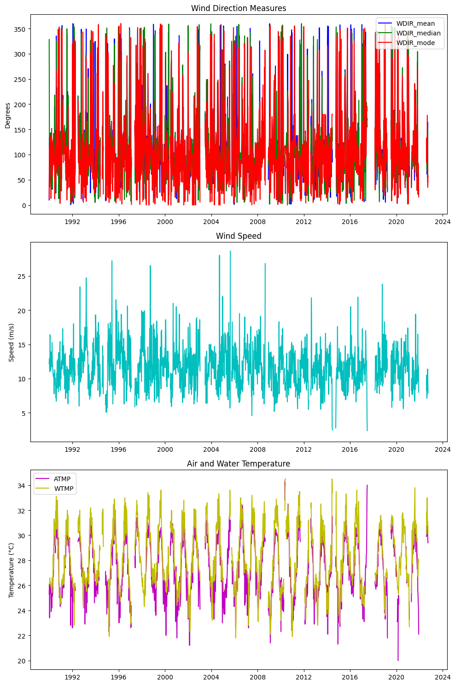
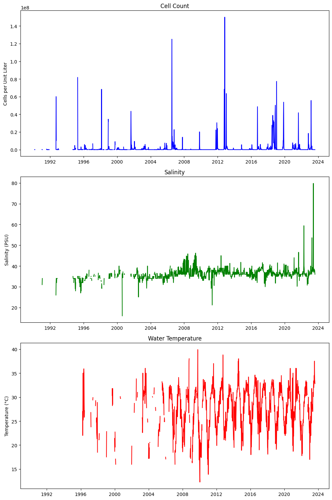
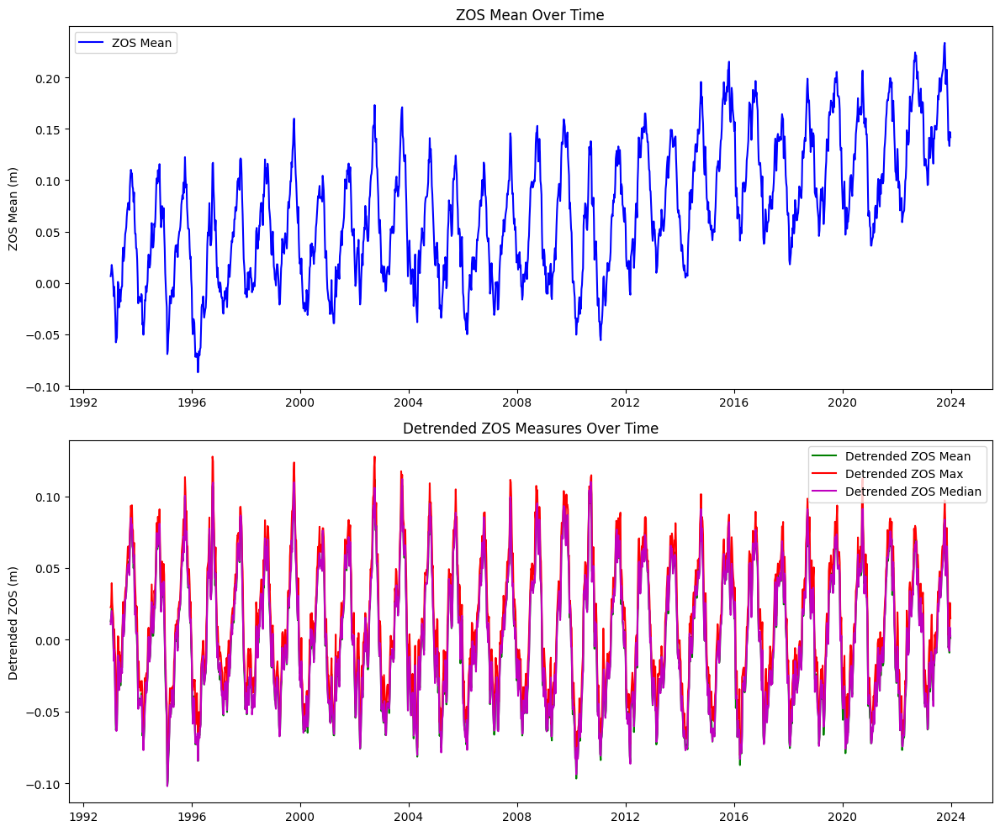
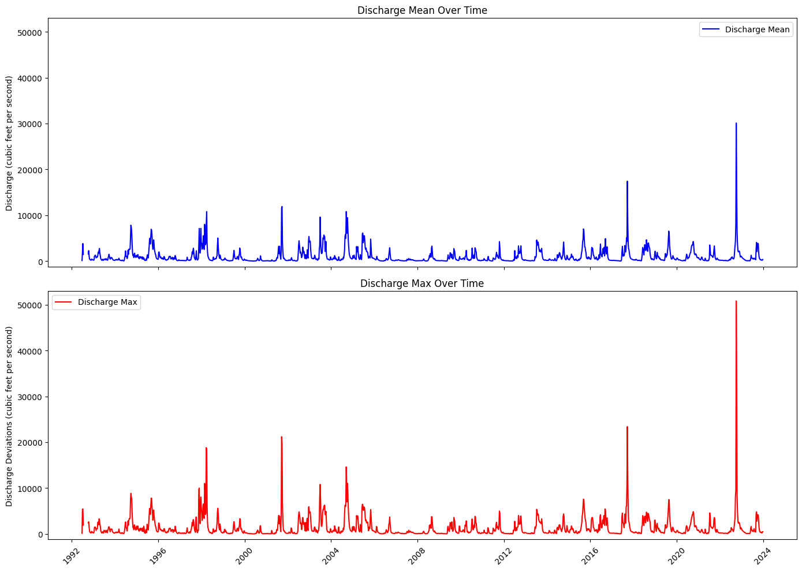
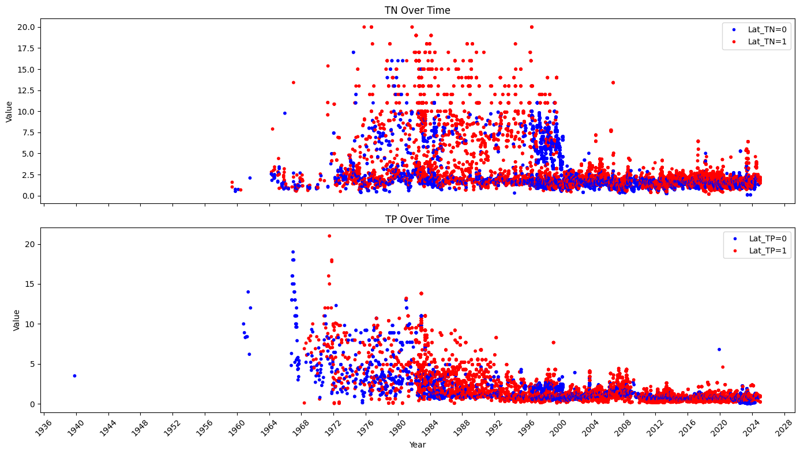
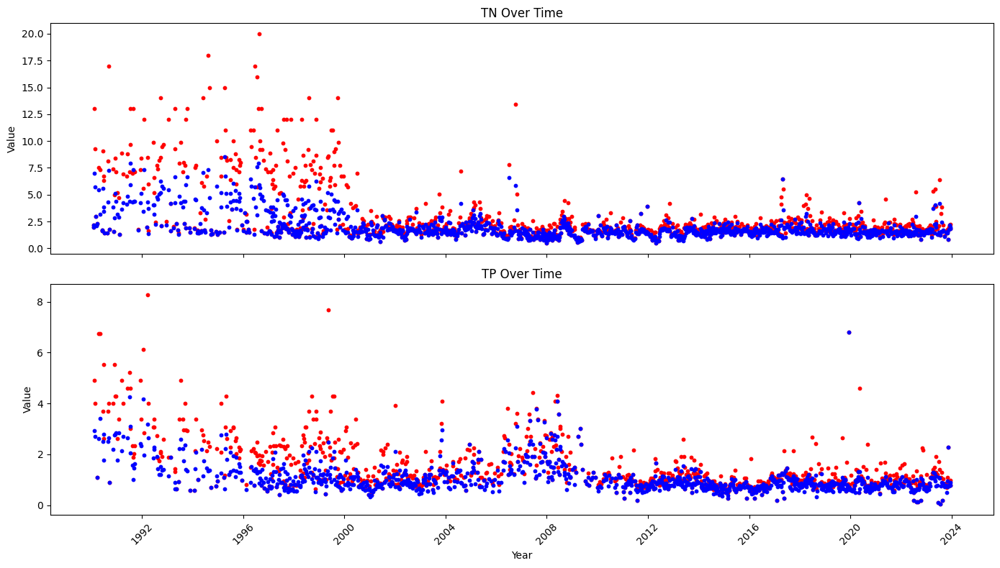
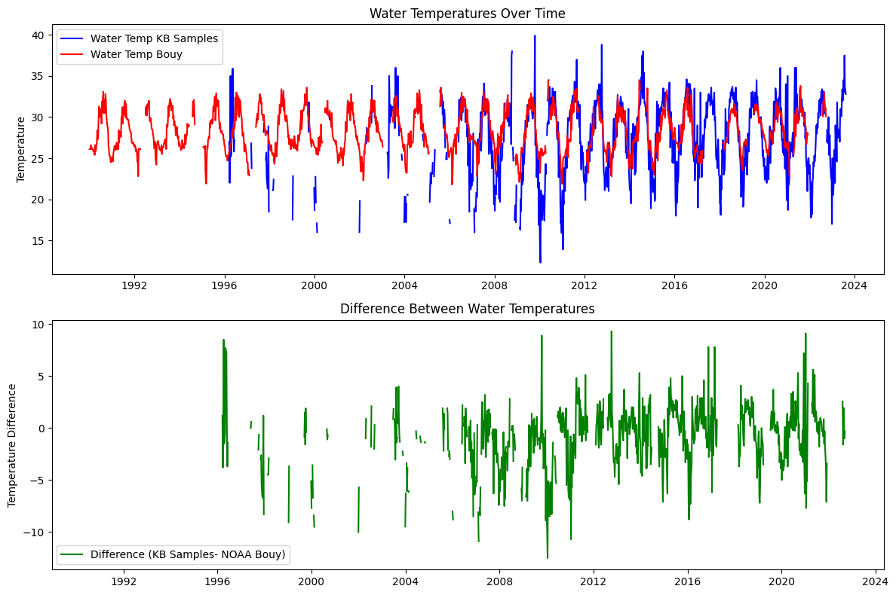
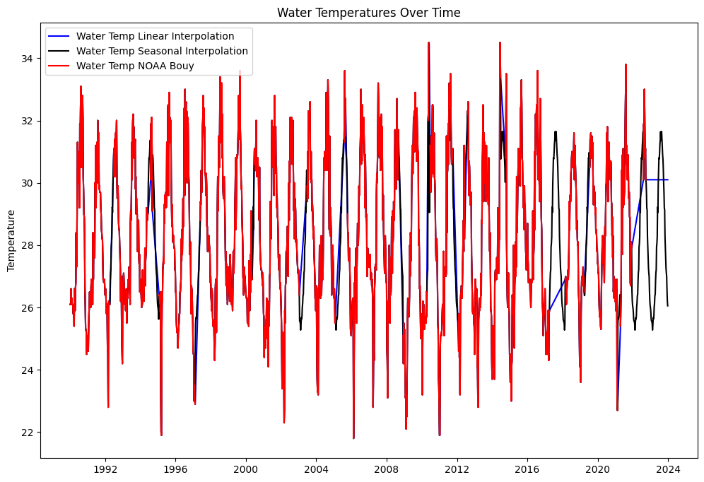
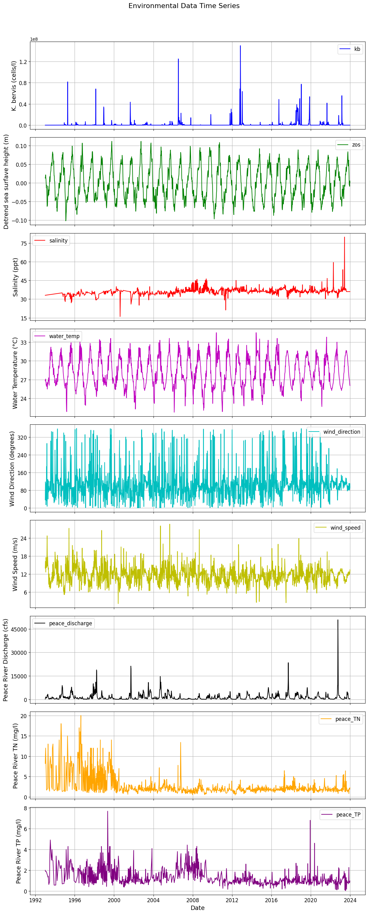
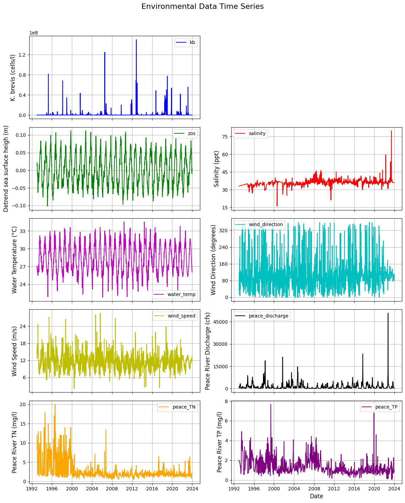

Machine learning data#
import pandas as pd
import numpy as np
import matplotlib.pyplot as plt
import os
from scipy.stats import circmean, mode
import matplotlib.dates as mdates
import warnings
warnings.filterwarnings('ignore')
StartDate='1990-01-01'
EndDate= '2023-12-31'
1. Atmosphere#
1.1 Daily resampling#
# Create 'output' folder if it doesn't exist
if not os.path.exists('input'):
os.makedirs('input')
# Load the cleaned data
file_path = '../atmosphere/output/wind_data_cleaned.csv'
data = pd.read_csv(file_path, parse_dates=['Timestamp'], index_col='Timestamp')
# Drop NaNs to avoid invalid math operations
data = data.dropna(subset=['WDIR', 'WSPD'])
# Convert wind direction to radians
wind_direction_radians = np.radians(data['WDIR'])
# Compute weighted sine and cosine components
sin_component = np.sin(wind_direction_radians) * data['WSPD']
cos_component = np.cos(wind_direction_radians) * data['WSPD']
# Resample and compute the weighted mean of sine and cosine components
mean_sin = sin_component.resample('D').sum()
mean_cos = cos_component.resample('D').sum()
# Compute resultant vector length (magnitude) for normalization
total_wind_speed = data['WSPD'].resample('D').sum()
# Normalize vector length by total wind speed
mean_sin /= total_wind_speed
mean_cos /= total_wind_speed
# Use atan2 to calculate the directional mean (in degrees)
mean_direction = np.degrees(np.arctan2(mean_sin, mean_cos))
mean_direction = (mean_direction + 360) % 360 # Ensure values between 0–360
# Compute median manually using circular statistics
def circular_median(angles):
if len(angles) == 0:
return np.nan
angles = np.radians(angles)
sin_sum = np.sum(np.sin(angles))
cos_sum = np.sum(np.cos(angles))
median = np.arctan2(sin_sum, cos_sum)
median = np.degrees(median) % 360
return median
median_direction = data['WDIR'].resample('D').apply(circular_median)
# Compute mode using circular mode
mode_direction = data['WDIR'].resample('D').apply(
lambda x: np.atleast_1d(mode(x, nan_policy='omit').mode)[0] if np.size(mode(x, nan_policy='omit').mode) > 0 else np.nan
)
# Resample other parameters using max
resampled_data = pd.DataFrame({
'WDIR_mean': mean_direction,
'WDIR_median': median_direction,
'WDIR_mode': mode_direction,
'WSPD': data['WSPD'].resample('D').max(),
'ATMP': data['ATMP'].resample('D').max(),
'WTMP': data['WTMP'].resample('D').max(),
})
# Rename the index column
resampled_data = resampled_data.rename_axis('time')
# Save to CSV
output_file = 'input/wind_daily.csv'
resampled_data.to_csv(output_file)
print(f"\nResampled data saved to '{output_file}'")
#display(resampled_data)
Resampled data saved to 'input/wind_daily.csv'
1.2 Weekly resampling#
# Create 'output' folder if it doesn't exist
if not os.path.exists('input'):
os.makedirs('input')
# Load the cleaned data
file_path = '../atmosphere/output/wind_data_cleaned.csv'
data = pd.read_csv(file_path, parse_dates=['Timestamp'], index_col='Timestamp')
# Drop NaNs to avoid invalid math operations
data = data.dropna(subset=['WDIR', 'WSPD'])
# Define weekly date range
weekly_date_range = pd.date_range(start=StartDate, end=EndDate, freq='W-MON')
# Initialize DataFrame with this weekly index
weekly_wind = pd.DataFrame(index=weekly_date_range)
weekly_wind.index.name = 'Timestamp'
# Convert wind direction to radians
wind_direction_radians = np.radians(data['WDIR'])
# Compute weighted sine and cosine components
sin_component = np.sin(wind_direction_radians) * data['WSPD']
cos_component = np.cos(wind_direction_radians) * data['WSPD']
# Resample to weekly
mean_sin_weekly = sin_component.resample('W-MON').sum()
mean_cos_weekly = cos_component.resample('W-MON').sum()
# Normalize the resultant vector lengths
total_wind_speed_weekly = data['WSPD'].resample('W-MON').sum()
mean_sin_weekly /= total_wind_speed_weekly
mean_cos_weekly /= total_wind_speed_weekly
# Calculate directional mean (in degrees)
mean_direction_weekly = np.degrees(np.arctan2(mean_sin_weekly, mean_cos_weekly))
mean_direction_weekly = (mean_direction_weekly + 360) % 360
# Compute median using circular statistics
def circular_median(angles):
if len(angles) == 0:
return np.nan
angles = np.radians(angles)
sin_sum = np.sum(np.sin(angles))
cos_sum = np.sum(np.cos(angles))
median = np.arctan2(sin_sum, cos_sum)
median = np.degrees(median) % 360
return median
median_direction_weekly = data['WDIR'].resample('W-MON').apply(circular_median)
# Compute circular mode of wind direction
mode_direction_weekly = data['WDIR'].resample('W-MON').apply(
lambda x: np.atleast_1d(mode(x, nan_policy='omit').mode)[0] if np.size(mode(x, nan_policy='omit').mode) > 0 else np.nan
)
# Compile resampled data
weekly_wind['WDIR_mean'] = mean_direction_weekly
weekly_wind['WDIR_median'] = median_direction_weekly
weekly_wind['WDIR_mode'] = mode_direction_weekly
weekly_wind['WSPD'] = data['WSPD'].resample('W-MON').max()
weekly_wind['ATMP'] = data['ATMP'].resample('W-MON').max()
weekly_wind['WTMP'] = data['WTMP'].resample('W-MON').max()
# Rename the index column
weekly_wind = weekly_wind.rename_axis('time')
# Create a 3x1 grid of subplots
fig, axs = plt.subplots(3, 1, figsize=(10, 15))
# Plot WDIR_mean, WDIR_median, WDIR_mode on the first subplot
axs[0].plot(weekly_wind.index, weekly_wind['WDIR_mean'], label='WDIR_mean', color='b')
axs[0].plot(weekly_wind.index, weekly_wind['WDIR_median'], label='WDIR_median', color='g')
axs[0].plot(weekly_wind.index, weekly_wind['WDIR_mode'], label='WDIR_mode', color='r')
axs[0].set_title('Wind Direction Measures')
axs[0].set_ylabel('Degrees')
axs[0].legend(loc='best')
# Plot WSPD on the second subplot
axs[1].plot(weekly_wind.index, weekly_wind['WSPD'], color='c')
axs[1].set_title('Wind Speed')
axs[1].set_ylabel('Speed (m/s)')
# Plot ATMP and WTMP on the third subplot
axs[2].plot(weekly_wind.index, weekly_wind['ATMP'], label='ATMP', color='m')
axs[2].plot(weekly_wind.index, weekly_wind['WTMP'], label='WTMP', color='y')
axs[2].set_title('Air and Water Temperature')
axs[2].set_ylabel('Temperature (°C)')
axs[2].legend(loc='best')
# Adjust layout for better fit
plt.tight_layout()
# Show the plots
plt.show()
# Save to CSV
output_file_weekly = 'input/wind_weekly.csv'
weekly_wind.to_csv(output_file_weekly)
print(f"\nResampled weekly data saved to '{output_file_weekly}'")
display(weekly_wind)

Resampled weekly data saved to 'input/wind_weekly.csv'
| WDIR_mean | WDIR_median | WDIR_mode | WSPD | ATMP | WTMP | |
|---|---|---|---|---|---|---|
| time | ||||||
| 1990-01-01 | 9.895843 | 328.282768 | 15.0 | 12.2 | 25.3 | 26.1 |
| 1990-01-08 | 133.922631 | 137.632056 | 113.0 | 12.9 | 26.1 | 26.1 |
| 1990-01-15 | 44.485475 | 35.621339 | 95.0 | 11.3 | 23.4 | 26.1 |
| 1990-01-22 | 113.017005 | 113.548079 | 105.0 | 11.0 | 26.1 | 26.6 |
| 1990-01-29 | 98.798579 | 109.931826 | 117.0 | 16.4 | 25.6 | 26.1 |
| ... | ... | ... | ... | ... | ... | ... |
| 2023-11-27 | NaN | NaN | NaN | NaN | NaN | NaN |
| 2023-12-04 | NaN | NaN | NaN | NaN | NaN | NaN |
| 2023-12-11 | NaN | NaN | NaN | NaN | NaN | NaN |
| 2023-12-18 | NaN | NaN | NaN | NaN | NaN | NaN |
| 2023-12-25 | NaN | NaN | NaN | NaN | NaN | NaN |
1774 rows × 6 columns
2. Ocean#
2.1 HAB#
2.1.1 Daily resampling max#
import pandas as pd
# Reading the CSV file
file_path = "../ocean/output/hab_charlotte_harbor_all.csv"
df = pd.read_csv(file_path)
# Converting SAMPLE_DATE to datetime, set as index, rename index
df['SAMPLE_DATE'] = pd.to_datetime(df['SAMPLE_DATE'])
df.set_index('SAMPLE_DATE', inplace=True)
# Create the 'num_samples' column
df['samples'] = df.groupby(df.index).size()
# Create the 'num_high_samples' column using the selection for high CELLCOUNT
high_count_criteria = df['CELLCOUNT'] > 1e5
# Filter the original DataFrame for only the high CELLCOUNT entries, then groupby date and count them
num_high_samples = (df[high_count_criteria].groupby(df[high_count_criteria].index).size())
# Reindex to match the original DataFrame; fill missing with 0 and convert to integer type
df['samples_1e5'] = num_high_samples.reindex(df.index, fill_value=0).astype(int)
# Save to CSV
output_file = 'input/hab_daily_all.csv'
df.to_csv(output_file)
# # Displaying the first few rows of the DataFrame to ensure it's set up correctly
# display(df)
# Sort the DataFrame by the index ('SAMPLE_DATE') and 'CELLCOUNT'
df_sorted = df.sort_values(['SAMPLE_DATE', 'CELLCOUNT'], ascending=[True, False])
# Use groupby on the index converted to date to find the maximum per day
df_daily_max = df_sorted.groupby(df_sorted.index.date, group_keys=False).apply(lambda x: x.head(1))
# Reset index to keep 'SAMPLE_DATE' as the index again, now only with daily max
df_daily_max.index = pd.to_datetime(df_daily_max.index)
df_daily_max.index.name = 'time'
# Limit the DataFrame to the specified date range
df_daily_max = df_daily_max.loc[StartDate:EndDate]
# Save to CSV
output_file = 'input/hab_daily.csv'
df_daily_max.to_csv(output_file)
# Display the first few rows to verify the result
print(f"\nResampled weekly data saved to '{output_file}'")
#display(df_daily_max)
Resampled weekly data saved to 'input/hab_daily.csv'
2.1.2 Weekly resampling#
# Reading the CSV file
file_path = "../ocean/output/hab_charlotte_harbor_all.csv"
df = pd.read_csv(file_path)
# Convert SAMPLE_DATE to datetime
df['SAMPLE_DATE'] = pd.to_datetime(df['SAMPLE_DATE'])
# Set SAMPLE_DATE as the index
df.set_index('SAMPLE_DATE', inplace=True)
# Resample and compute maximum values for CELLCOUNT, SALINITY, and WATER_TEMP
weekly_hab = df.resample('W-MON').agg({
'CELLCOUNT': 'max',
'SALINITY': 'max',
'WATER_TEMP': 'max'
})
# Create a complete weekly date range
complete_date_range = pd.date_range(start=StartDate, end=EndDate, freq='W-MON')
# Reindex the dataframe to this complete date range, filling missing data with NaNs
weekly_hab = weekly_hab.reindex(complete_date_range)
# Reset index to have the week start date as a column
weekly_hab.reset_index(inplace=True)
weekly_hab.rename(columns={'index': 'WEEK_START'}, inplace=True)
# Set WEEK_START as the index and rename it to 'time'
weekly_hab.set_index('WEEK_START', inplace=True)
weekly_hab.index.name = 'time'
# Create a 3x1 grid of subplots
fig, axs = plt.subplots(3, 1, figsize=(10, 15))
# Plot CELLCOUNT on the first subplot
axs[0].plot(weekly_hab.index, weekly_hab['CELLCOUNT'], color='b')
axs[0].set_title('Cell Count')
axs[0].set_ylabel('Cells per Unit Liter')
# Plot SALINITY on the second subplot
axs[1].plot(weekly_hab.index, weekly_hab['SALINITY'], color='g')
axs[1].set_title('Salinity')
axs[1].set_ylabel('Salinity (PSU)')
# Plot WATER_TEMP on the third subplot
axs[2].plot(weekly_hab.index, weekly_hab['WATER_TEMP'], color='r')
axs[2].set_title('Water Temperature')
axs[2].set_ylabel('Temperature (°C)')
# Adjust layout for better fit
plt.tight_layout()
# Show the plots
plt.show()
# Save to CSV
output_file = 'input/hab_weekly.csv'
weekly_hab.to_csv(output_file)
# Display the first few rows to verify the result
print(f"\nResampled weekly data saved to '{output_file}'")
display(weekly_hab)

Resampled weekly data saved to 'input/hab_weekly.csv'
| CELLCOUNT | SALINITY | WATER_TEMP | |
|---|---|---|---|
| time | |||
| 1990-01-01 | NaN | NaN | NaN |
| 1990-01-08 | NaN | NaN | NaN |
| 1990-01-15 | NaN | NaN | NaN |
| 1990-01-22 | NaN | NaN | NaN |
| 1990-01-29 | NaN | NaN | NaN |
| ... | ... | ... | ... |
| 2023-11-27 | NaN | NaN | NaN |
| 2023-12-04 | NaN | NaN | NaN |
| 2023-12-11 | NaN | NaN | NaN |
| 2023-12-18 | NaN | NaN | NaN |
| 2023-12-25 | NaN | NaN | NaN |
1774 rows × 3 columns
2.2 zos#
2.2.1 Weekly resampling#
# Reading the CSV file and parsing the dates
file_path = "../ocean/output/zos_daily.csv"
df = pd.read_csv(file_path, parse_dates=['time'], index_col='time')
# Resample zos to compute the weekly mean
zos_weekly_mean = df['zos'].resample('W-MON').mean()
# Resample detrended_zos using max
detrended_zos_mean = df['detrended_zos'].resample('W-MON').mean()
# Resample detrended_zos using max
detrended_zos_max = df['detrended_zos'].resample('W-MON').max()
# Resample detrended_zos using median
detrended_zos_median = df['detrended_zos'].resample('W-MON').median()
# Generate a complete weekly date range for the entire period
weekly_range = pd.date_range(start=StartDate, end=EndDate, freq='W-MON')
# Combine everything into a single DataFrame ensuring all weeks are present
weekly_zos = pd.DataFrame({
'zos_mean': zos_weekly_mean,
'detrended_zos_mean': detrended_zos_mean,
'detrended_zos_max': detrended_zos_max,
'detrended_zos_median': detrended_zos_median
}, index=weekly_range)
# Rename the index column
weekly_zos = weekly_zos.rename_axis('time')
# Limit the DataFrame to the specified date range
weekly_zos = weekly_zos.loc[StartDate:EndDate]
# Create a 2x1 grid of subplots
fig, axs = plt.subplots(2, 1, figsize=(12, 10))
# Plot zos_mean on the first subplot
axs[0].plot(weekly_zos.index, weekly_zos['zos_mean'], color='b', label='ZOS Mean')
axs[0].set_title('ZOS Mean Over Time')
axs[0].set_ylabel('ZOS Mean (m)')
axs[0].legend(loc='best')
# Plot detrended_zos_mean, detrended_zos_max, and detrended_zos_median on the second subplot
axs[1].plot(weekly_zos.index, weekly_zos['detrended_zos_mean'], color='g', label='Detrended ZOS Mean')
axs[1].plot(weekly_zos.index, weekly_zos['detrended_zos_max'], color='r', label='Detrended ZOS Max')
axs[1].plot(weekly_zos.index, weekly_zos['detrended_zos_median'], color='m', label='Detrended ZOS Median')
axs[1].set_title('Detrended ZOS Measures Over Time')
axs[1].set_ylabel('Detrended ZOS (m)')
axs[1].legend(loc='best')
# Adjust layout for better fit
plt.tight_layout()
# Show the plots
plt.show()
# Save the resulting DataFrame to a new CSV file
output_file = "input/zos_weekly.csv"
weekly_zos.to_csv(output_file)
print(f"Extended resampled data saved to '{output_file}'")
display(weekly_zos)

Extended resampled data saved to 'input/zos_weekly.csv'
| zos_mean | detrended_zos_mean | detrended_zos_max | detrended_zos_median | |
|---|---|---|---|---|
| time | ||||
| 1990-01-01 | NaN | NaN | NaN | NaN |
| 1990-01-08 | NaN | NaN | NaN | NaN |
| 1990-01-15 | NaN | NaN | NaN | NaN |
| 1990-01-22 | NaN | NaN | NaN | NaN |
| 1990-01-29 | NaN | NaN | NaN | NaN |
| ... | ... | ... | ... | ... |
| 2023-11-27 | 0.138694 | -0.005114 | 0.003364 | -0.005671 |
| 2023-12-04 | 0.138997 | -0.003981 | 0.004709 | -0.004344 |
| 2023-12-11 | 0.133151 | -0.009013 | -0.005218 | -0.007787 |
| 2023-12-18 | 0.146926 | 0.005557 | 0.025714 | 0.008546 |
| 2023-12-25 | 0.141837 | 0.001243 | 0.014987 | 0.002676 |
1774 rows × 4 columns
3. River#
3.1 Peace river discharge#
# Reading the CSV file and parsing the dates
file_path = "../river/input/peace_river_discharge_arcadia.csv"
df = pd.read_csv(file_path, parse_dates=['datetime'], index_col='datetime')
# Ensure the DataFrame is sorted by the datetime index
df.sort_index(inplace=True)
# Resample the data to weekly frequency and calculate mean and max
weekly_pc_dis = df['00060'].resample('W-MON').agg(['mean', 'max'])
# Limit the DataFrame to the specified date range
weekly_pc_dis = weekly_pc_dis.loc[StartDate:EndDate]
# Rename the columns to match the desired output format
weekly_pc_dis.rename(columns={'mean': 'discharge_mean', 'max': 'discharge_max'}, inplace=True)
# Create additional columns for deviations from the mean
weekly_pc_dis['discharge_meanDev'] = weekly_pc_dis['discharge_mean'] - weekly_pc_dis['discharge_mean'].mean()
weekly_pc_dis['discharge_maxDev'] = weekly_pc_dis['discharge_max'] - weekly_pc_dis['discharge_max'].mean()
# Rename the index to 'time'
# Convert the datetime index to a date format (YYYY-MM-DD)
weekly_pc_dis.index.name = 'time'
weekly_pc_dis.index = weekly_pc_dis.index.strftime('%Y-%m-%d')
weekly_pc_dis.index = pd.to_datetime(weekly_pc_dis.index)
# Save the resulting DataFrame to a new CSV file
output_file = "input/discharge_peace_weekly.csv"
weekly_pc_dis.to_csv(output_file)
print(f"Resampled data saved to '{output_file}'")
display(weekly_pc_dis)
Resampled data saved to 'input/discharge_peace_weekly.csv'
| discharge_mean | discharge_max | discharge_meanDev | discharge_maxDev | |
|---|---|---|---|---|
| time | ||||
| 1990-01-01 | NaN | NaN | NaN | NaN |
| 1990-01-08 | NaN | NaN | NaN | NaN |
| 1990-01-15 | NaN | NaN | NaN | NaN |
| 1990-01-22 | NaN | NaN | NaN | NaN |
| 1990-01-29 | NaN | NaN | NaN | NaN |
| ... | ... | ... | ... | ... |
| 2023-11-27 | 273.932127 | 326.0 | -749.387421 | -1041.917759 |
| 2023-12-04 | 210.825472 | 231.0 | -812.494076 | -1136.917759 |
| 2023-12-11 | 183.182371 | 201.0 | -840.137177 | -1166.917759 |
| 2023-12-18 | 204.811263 | 460.0 | -818.508284 | -907.917759 |
| 2023-12-25 | 344.843609 | 470.0 | -678.475939 | -897.917759 |
1774 rows × 4 columns
Plot discharge#
# Step 3: Create a 2x1 grid of subplots
common_y_range = (-1200, 5.3e4)
fig, axs = plt.subplots(2, 1, figsize=(14, 10), sharex=True)
# Step 4: Plot discharge_mean on the first subplot
axs[0].plot(weekly_pc_dis.index, weekly_pc_dis['discharge_mean'], color='b', label='Discharge Mean')
axs[0].set_title('Discharge Mean Over Time')
axs[0].set_ylabel('Discharge (cubic feet per second)')
axs[0].set_ylim(common_y_range)
axs[0].legend(loc='best')
# Step 5: Plot discharge_max on the second subplot
axs[1].plot(weekly_pc_dis.index, weekly_pc_dis['discharge_max'], color='r', label='Discharge Max')
axs[1].set_title('Discharge Max Over Time')
axs[1].set_ylabel('Discharge Deviations (cubic feet per second)')
axs[1].set_ylim(common_y_range)
axs[1].legend(loc='best')
# # Step 6: Set x-axis range manually (force matplotlib to obey)
# start_date = weekly_pc_dis_nan.index.min()
# end_date = weekly_pc_dis_nan.index.max()
# axs[0].set_xlim([start_date, end_date])
# axs[1].set_xlim([start_date, end_date])
# Step 7: Improve x-axis formatting
locator = mdates.YearLocator(4) # Every 5 years
formatter = mdates.DateFormatter('%Y')
for ax in axs:
ax.xaxis.set_major_locator(locator)
ax.xaxis.set_major_formatter(formatter)
ax.tick_params(axis='x', rotation=45)
# Step 8: Fix layout and overlap issues
plt.tight_layout()
# Step 9: Show plot
plt.show()

3.2 Peace river TN and TP#
basinID='03100101'
file_path = f'../river/input/HU8_{basinID}_TN_TP.csv' # Adjust path if needed
df = pd.read_csv(file_path)
# Separate TN and TP data
tn_data = df[df['Parameter'].isin(['TN_mgl', 'TN_ugl'])]
tp_data = df[df['Parameter'].isin(['TP_mgl', 'TP_ugl'])]
# Convert concentration to consistent units (mg/L) if necessary
tn_data.loc[tn_data['Parameter'] == 'TN_ugl', 'Result_Value'] /= 1000
tp_data.loc[tp_data['Parameter'] == 'TP_ugl', 'Result_Value'] /= 1000
# Ensure 'SampleDate' is converted to datetime
tn_data['SampleDate'] = pd.to_datetime(tn_data['SampleDate'])
tp_data['SampleDate'] = pd.to_datetime(tp_data['SampleDate'])
# Sort the data by 'SampleDate', set 'SampleDate' as the index and rename it to 'time'
tn_data = tn_data.sort_values('SampleDate').set_index('SampleDate').rename_axis('time')
tp_data = tp_data.sort_values('SampleDate').set_index('SampleDate').rename_axis('time')
# Lower and upper data
# Create a new column in tp_data
tn_data['Lat_TN'] = np.where(tn_data['Actual_Latitude'] <= 27.4, 0, 1)
tp_data['Lat_TP'] = np.where(tp_data['Actual_Latitude'] <= 27.4, 0, 1)
# Select relevant columns (Result_Value) from each DataFrame
tn_results = tn_data[['Result_Value','Lat_TN']].rename(columns={'Result_Value': 'TN'})
tp_results = tp_data[['Result_Value','Lat_TP']].rename(columns={'Result_Value': 'TP'})
# Join both DataFrames on their time index
data = tn_results.join(tp_results, how='outer')
# Display the combined DataFrame
#display(data.loc[StartDate:EndDate])
# Fill NaN values before mapping to colors
# You can choose to fill with a specific category, here I am adding a new category for NaN values as 'grey'
data['Lat_TN_filled'] = data['Lat_TN'].fillna(-1).map({0: 'blue', 1: 'red', -1: 'black'})
data['Lat_TP_filled'] = data['Lat_TP'].fillna(-1).map({0: 'blue', 1: 'red', -1: 'black'})
# Create a 2x1 grid of subplots
fig, axs = plt.subplots(2, 1, figsize=(14, 8), sharex=True)
# Scatter plot for TN
lat_tn_colors = data['Lat_TN_filled']
axs[0].scatter(data.index, data['TN'], s=10, c=lat_tn_colors)
axs[0].set_title('TN Over Time')
axs[0].set_ylabel('Value')
axs[0].xaxis.set_major_locator(mdates.YearLocator(4)) # Set major ticks every 4 years
axs[0].xaxis.set_major_formatter(mdates.DateFormatter('%Y')) # Format ticks as years
axs[0].legend(handles=[
plt.Line2D([0], [0], marker='o', color='w', label='Lat_TN=0', markerfacecolor='blue', markersize=5),
plt.Line2D([0], [0], marker='o', color='w', label='Lat_TN=1', markerfacecolor='red', markersize=5),
], loc='upper right')
# Scatter plot for TP
lat_tp_colors = data['Lat_TP_filled']
axs[1].scatter(data.index, data['TP'], s=10, c=lat_tp_colors)
axs[1].set_title('TP Over Time')
axs[1].set_ylabel('Value')
axs[1].set_xlabel('Year')
axs[1].legend(handles=[
plt.Line2D([0], [0], marker='o', color='w', label='Lat_TP=0', markerfacecolor='blue', markersize=5),
plt.Line2D([0], [0], marker='o', color='w', label='Lat_TP=1', markerfacecolor='red', markersize=5),
], loc='upper right')
axs[1].xaxis.set_major_locator(mdates.YearLocator(4)) # Set major ticks every 4 years
axs[1].xaxis.set_major_formatter(mdates.DateFormatter('%Y')) # Format ticks as years
# Rotate date labels for better visibility
plt.setp(axs[1].xaxis.get_majorticklabels(), rotation=45)
# Adjust layout for better fit
plt.tight_layout()
# Show the plots
plt.show()

# Resample the original data by week, calculating both mean and max
resampled_mean = data.resample('W-MON').mean(numeric_only=True) \
.rename(columns={'TN': 'TN_mean','TP': 'TP_mean'})
resampled_max = data.resample('W-MON').max(numeric_only=True) \
.rename(columns={'TN': 'TN_max','TP': 'TP_max'})
# Slice the resampled data for the desired date range
weekly_mean = resampled_mean.loc[StartDate:EndDate]
weekly_max = resampled_max.loc[StartDate:EndDate]
# Create the weekly_pc_nut DataFrame
weekly_pc_nut = pd.DataFrame(index=weekly_mean.index)
weekly_pc_nut['TN_mean'] = weekly_mean['TN_mean']
weekly_pc_nut['TN_max'] = weekly_max['TN_max']
weekly_pc_nut['TP_mean'] = weekly_mean['TP_mean']
weekly_pc_nut['TP_max'] = weekly_max['TP_max']
display(weekly_pc_nut)
| TN_mean | TN_max | TP_mean | TP_max | |
|---|---|---|---|---|
| time | ||||
| 1990-01-01 | NaN | NaN | NaN | NaN |
| 1990-01-08 | NaN | NaN | NaN | NaN |
| 1990-01-15 | NaN | NaN | NaN | NaN |
| 1990-01-22 | NaN | NaN | NaN | NaN |
| 1990-01-29 | 1.980000 | 1.980 | NaN | NaN |
| ... | ... | ... | ... | ... |
| 2023-11-27 | NaN | NaN | NaN | NaN |
| 2023-12-04 | 2.180000 | 2.180 | 0.800000 | 0.80 |
| 2023-12-11 | 1.840000 | 1.840 | 0.790000 | 0.79 |
| 2023-12-18 | 1.956353 | 2.208 | 0.884941 | 0.97 |
| 2023-12-25 | NaN | NaN | NaN | NaN |
1774 rows × 4 columns
# Create a 2x1 grid of subplots
fig, axs = plt.subplots(2, 1, figsize=(14, 8), sharex=True)
# Scatter plot for TN
axs[0].scatter(weekly_pc_nut.index, weekly_pc_nut['TN_max'], s=10, c='red',label='max')
axs[0].scatter(weekly_pc_nut.index, weekly_pc_nut['TN_mean'], s=10, c='blue',label='mean')
axs[0].set_title('TN Over Time')
axs[0].set_ylabel('Value')
axs[0].xaxis.set_major_locator(mdates.YearLocator(4)) # Set major ticks every 4 years
axs[0].xaxis.set_major_formatter(mdates.DateFormatter('%Y')) # Format ticks as years
# Scatter plot for TP
axs[1].scatter(weekly_pc_nut.index, weekly_pc_nut['TP_max'], s=10, c='red',label='max')
axs[1].scatter(weekly_pc_nut.index, weekly_pc_nut['TP_mean'], s=10, c='blue',label='mean')
axs[1].set_title('TP Over Time')
axs[1].set_ylabel('Value')
axs[1].set_xlabel('Year')
axs[1].xaxis.set_major_locator(mdates.YearLocator(4)) # Set major ticks every 4 years
axs[1].xaxis.set_major_formatter(mdates.DateFormatter('%Y')) # Format ticks as years
# Rotate date labels for better visibility
plt.setp(axs[1].xaxis.get_majorticklabels(), rotation=45)
# Adjust layout for better fit
plt.tight_layout()
# Show the plots
plt.show()

4. Collect dataset#
4.1 Display data#
Display data to select columns to be combined and check start and end date
#Display datasets
rows_to_show=[0,1,-2, -1]
display(weekly_wind.iloc[rows_to_show], weekly_wind.shape)
display(weekly_hab.iloc[rows_to_show], weekly_hab.shape)
display(weekly_zos.iloc[rows_to_show], weekly_zos.shape)
display(weekly_pc_dis.iloc[rows_to_show], weekly_pc_dis.shape)
display(weekly_pc_nut.iloc[rows_to_show], weekly_pc_nut.shape)
| WDIR_mean | WDIR_median | WDIR_mode | WSPD | ATMP | WTMP | |
|---|---|---|---|---|---|---|
| time | ||||||
| 1990-01-01 | 9.895843 | 328.282768 | 15.0 | 12.2 | 25.3 | 26.1 |
| 1990-01-08 | 133.922631 | 137.632056 | 113.0 | 12.9 | 26.1 | 26.1 |
| 2023-12-18 | NaN | NaN | NaN | NaN | NaN | NaN |
| 2023-12-25 | NaN | NaN | NaN | NaN | NaN | NaN |
(1774, 6)
| CELLCOUNT | SALINITY | WATER_TEMP | |
|---|---|---|---|
| time | |||
| 1990-01-01 | NaN | NaN | NaN |
| 1990-01-08 | NaN | NaN | NaN |
| 2023-12-18 | NaN | NaN | NaN |
| 2023-12-25 | NaN | NaN | NaN |
(1774, 3)
| zos_mean | detrended_zos_mean | detrended_zos_max | detrended_zos_median | |
|---|---|---|---|---|
| time | ||||
| 1990-01-01 | NaN | NaN | NaN | NaN |
| 1990-01-08 | NaN | NaN | NaN | NaN |
| 2023-12-18 | 0.146926 | 0.005557 | 0.025714 | 0.008546 |
| 2023-12-25 | 0.141837 | 0.001243 | 0.014987 | 0.002676 |
(1774, 4)
| discharge_mean | discharge_max | discharge_meanDev | discharge_maxDev | |
|---|---|---|---|---|
| time | ||||
| 1990-01-01 | NaN | NaN | NaN | NaN |
| 1990-01-08 | NaN | NaN | NaN | NaN |
| 2023-12-18 | 204.811263 | 460.0 | -818.508284 | -907.917759 |
| 2023-12-25 | 344.843609 | 470.0 | -678.475939 | -897.917759 |
(1774, 4)
| TN_mean | TN_max | TP_mean | TP_max | |
|---|---|---|---|---|
| time | ||||
| 1990-01-01 | NaN | NaN | NaN | NaN |
| 1990-01-08 | NaN | NaN | NaN | NaN |
| 2023-12-18 | 1.956353 | 2.208 | 0.884941 | 0.97 |
| 2023-12-25 | NaN | NaN | NaN | NaN |
(1774, 4)
4.2 Interpolate temperature data from NOAA Bouy and KB data#
# Define the figure and subplots
fig, axs = plt.subplots(2, 1, figsize=(12, 8))
# weekly_wind: WDIR_mean WDIR_median WDIR_mode WSPD ATMP WTMP
# weekly_hab: CELLCOUNT SALINITY WATER_TEMP
# Plot water_temp_kb and water_temp on the first subplot
axs[0].plot(weekly_hab.index, weekly_hab['WATER_TEMP'], label='Water Temp KB Samples', color='b')
axs[0].plot(weekly_wind.index, weekly_wind['WTMP'], label='Water Temp Bouy', color='r')
axs[0].set_title('Water Temperatures Over Time')
axs[0].set_ylabel('Temperature')
axs[0].legend(loc='best')
# Plot the difference on the second subplot
axs[1].plot(weekly_hab.index, weekly_hab['WATER_TEMP'] - weekly_wind['WTMP'], label='Difference (KB Samples- NOAA Bouy)', color='g')
axs[1].set_title('Difference Between Water Temperatures')
axs[1].set_ylabel('Temperature Difference')
axs[1].legend(loc='best')
# Adjust layout for better fit and display the plot
plt.tight_layout()
plt.show()

# weekly_wind: WDIR_mean WDIR_median WDIR_mode WSPD ATMP WTMP
# weekly_hab: CELLCOUNT SALINITY WATER_TEMP
weekly_wind['water_temp_ln'] = weekly_wind['WTMP'].interpolate(method='linear')
# Fill with mean for the same week across years
weekly_wind['water_temp_sn'] = weekly_wind['WTMP'].fillna(
weekly_wind.groupby(weekly_wind.index.isocalendar().week)['WTMP'].transform('mean')
)
# df_combined['water_temp_mix']=df_combined['water_temp_kb'].interpolate(method='linear')
# df_combined.loc[StartDate:'2021-12-06', 'water_temp_mix']= df_combined.loc[StartDate:'2021-12-06','water_temp_sn']
# Define the figure and subplots
fig, axs = plt.subplots(1, 1, figsize=(12, 8))
# Plot water_temp_kb and water_temp on the first subplot
axs.plot(weekly_wind.index, weekly_wind['water_temp_ln'], label='Water Temp Linear Interpolation', color='b')
axs.plot(weekly_wind.index, weekly_wind['water_temp_sn'], label='Water Temp Seasonal Interpolation', color='k')
#axs.plot(df_combined.index, df_combined['water_temp_mix'], label='Water Temp Mixed Interpolation', color='g')
axs.plot(weekly_wind.index, weekly_wind['WTMP'], label='Water Temp NOAA Bouy', color='r')
axs.set_title('Water Temperatures Over Time')
axs.set_ylabel('Temperature')
axs.legend(loc='best')
<matplotlib.legend.Legend at 0x1cb48f016d0>

5. Combine datasets#
Combine datasets into one dataFrame for based on data selected for each feature, which can result in multiple datasets
5.1 Select columns to be combinded#
def combine(var_kb, var_sal, var_temp, var_wdir, var_wspd, var_zos, var_dis_pc, var_TN_pc, var_TP_pc):
df_combined = pd.DataFrame()
# CELLCOUNT -> kb
df_combined['kb'] = weekly_hab[var_kb]
# 1) SALINITY -> salinity
df_combined['salinity'] = weekly_hab[var_sal]
# 2) WTMP -> water_temp
df_combined['water_temp'] = weekly_wind[var_temp]
# 3) WDIR_mean OR WDIR_median OR WDIR_mode -> wind_direction
var='WDIR_mode' #'WDIR_mean', 'WDIR_median', 'WDIR_mode'
df_combined['wind_direction'] = weekly_wind[var_wdir]
# 4) WSPD -> wind_speed
df_combined['wind_speed'] = weekly_wind[var_wspd]
# 5) zos_mean OR detrended_zos_mean OR detrended_zos_max OR detrended_zos_median -> zos sea surface height
#var= 'detrended_zos_mean' #'zos_mean','detrended_zos_mean', 'detrended_zos_max', 'detrended_zos_median'
df_combined['zos'] = weekly_zos[var_zos]
# 6) discharge_mean OR discharge_max OR discharge_meanDev OR discharge_maxDev -> peace river discharge
#var= 'discharge_max'#'discharge_mean', 'discharge_max', 'discharge_meanDev', 'discharge_maxDev'
df_combined['peace_discharge'] = weekly_pc_dis[var_dis_pc]
# 7) TN_mean OR TN_max -> peace river TN
#var='TN_max' # 'TN_mean', 'TN_max'
df_combined['peace_TN'] = weekly_pc_nut[var_TN_pc]
# 8) TP_mean OR TP_max -> peace_TP
#var='TP_max' # 'TP_mean', 'TP_max'
df_combined['peace_TP'] = weekly_pc_nut[var_TP_pc]
# Ensure the index is named `time` if it's not already
df_combined.index.name = 'time'
return df_combined
# Define a dictionary to hold column selections for each category
column_selections = {
'kb': ['CELLCOUNT'],
'wsalinity': ['SALINITY'],
'wtemp': ['water_temp_sn'],
'wdir': ['WDIR_mean', 'WDIR_median', 'WDIR_mode'],
'wspeed': ['WSPD'],
'zos': ['zos_mean', 'detrended_zos_mean', 'detrended_zos_max', 'detrended_zos_median'],
'dis_pc': ['discharge_mean', 'discharge_max', 'discharge_meanDev', 'discharge_maxDev'],
'TN_pc': ['TN_mean', 'TN_max'],
'TP_pc': ['TP_mean', 'TP_max']
}
# Define the indices for selection
select = [0, 0, 0, 2, 0, 1, 1, 1, 1]
# Combine the selected columns into a DataFrame
df_combined = combine(
*[column_selections[key][select[i]] for i, key in enumerate(column_selections)]
)
# Create the filename based on selection indices
filename_indices = ''.join(f'{key[1].upper()}{select[i]}' for i, key in enumerate(column_selections))
output_file = f"input/data_weekly_{filename_indices}.csv"
# Save the resulting DataFrame to a new CSV file
df_combined.to_csv(output_file)
print(f"Combined data saved to '{output_file}'")
display(df_combined)
Combined data saved to 'input/data_weekly_B0S0T0D2S0O1I1N1P1.csv'
| kb | salinity | water_temp | wind_direction | wind_speed | zos | peace_discharge | peace_TN | peace_TP | |
|---|---|---|---|---|---|---|---|---|---|
| time | |||||||||
| 1990-01-01 | NaN | NaN | 26.100000 | 15.0 | 12.2 | NaN | NaN | NaN | NaN |
| 1990-01-08 | NaN | NaN | 26.100000 | 113.0 | 12.9 | NaN | NaN | NaN | NaN |
| 1990-01-15 | NaN | NaN | 26.100000 | 95.0 | 11.3 | NaN | NaN | NaN | NaN |
| 1990-01-22 | NaN | NaN | 26.600000 | 105.0 | 11.0 | NaN | NaN | NaN | NaN |
| 1990-01-29 | NaN | NaN | 26.100000 | 117.0 | 16.4 | NaN | NaN | 1.980 | NaN |
| ... | ... | ... | ... | ... | ... | ... | ... | ... | ... |
| 2023-11-27 | NaN | NaN | 27.110714 | NaN | NaN | -0.005114 | 326.0 | NaN | NaN |
| 2023-12-04 | NaN | NaN | 26.992857 | NaN | NaN | -0.003981 | 231.0 | 2.180 | 0.80 |
| 2023-12-11 | NaN | NaN | 26.528571 | NaN | NaN | -0.009013 | 201.0 | 1.840 | 0.79 |
| 2023-12-18 | NaN | NaN | 26.207143 | NaN | NaN | 0.005557 | 460.0 | 2.208 | 0.97 |
| 2023-12-25 | NaN | NaN | 26.053571 | NaN | NaN | 0.001243 | 470.0 | NaN | NaN |
1774 rows × 9 columns
5.2 Interpolate data#
Linear interpolation: salinty, wind_direction, wind_speed, peace_discharge, peace_TN, peace_TP,
Fill with zero: KB
df_interpol = df_combined[['kb', 'zos', 'salinity', 'water_temp',
'wind_direction', 'wind_speed',
'peace_discharge', 'peace_TN', 'peace_TP']].copy()
# Rename 'water_temp_sn' to 'water_temp'
df_interpol = df_interpol.rename(columns={'water_temp_sn': 'water_temp'})
# Fill NaN in 'kb' with 0
df_interpol['kb'].fillna(0, inplace=True)
# Linear interpolation on specified columns
df_interpol[['salinity', 'peace_discharge', 'peace_TN', 'peace_TP']] \
= df_interpol[['salinity', 'peace_discharge', 'peace_TN', 'peace_TP']].interpolate(method='linear')
# Fill with mean for the same week across years
df_interpol['wind_direction'] = df_interpol['wind_direction'].fillna(
df_combined.groupby(df_combined.index.isocalendar().week)['wind_direction'].transform('mean'))
df_interpol['wind_speed'] = df_interpol['wind_speed'].fillna(
df_combined.groupby(df_combined.index.isocalendar().week)['wind_speed'].transform('mean'))
#Set start date and end date
start_date='1993-01-01'
end_date='2023-12-31'
df_interpol=df_interpol.loc[start_date:end_date,:]
# Save and display df_interpol
print(f"Intepolated data saved to '{output_file}'")
df_interpol.to_csv('input/data_weekly_intepolated.csv')
# Displaying the DataFrame
display(df_interpol)
#summary_stats
display(df_interpol.describe())
Intepolated data saved to 'input/data_weekly_B0S0T0D2S0O1I1N1P1.csv'
| kb | zos | salinity | water_temp | wind_direction | wind_speed | peace_discharge | peace_TN | peace_TP | |
|---|---|---|---|---|---|---|---|---|---|
| time | |||||||||
| 1993-01-04 | 333.0 | 0.012906 | 33.043478 | 26.800000 | 36.000000 | 13.900000 | 202.0 | 8.2000 | 1.999091 |
| 1993-01-11 | 667.0 | 0.015614 | 33.065217 | 27.000000 | 118.000000 | 16.200000 | 423.0 | 10.1000 | 1.934545 |
| 1993-01-18 | 667.0 | 0.021702 | 33.086957 | 27.100000 | 108.000000 | 16.200000 | 1470.0 | 12.0000 | 1.870000 |
| 1993-01-25 | 0.0 | 0.015950 | 33.108696 | 26.800000 | 110.000000 | 12.600000 | 1450.0 | 10.0475 | 1.870500 |
| 1993-02-01 | 0.0 | 0.008977 | 33.130435 | 26.500000 | 14.000000 | 17.500000 | 1490.0 | 8.0950 | 1.871000 |
| ... | ... | ... | ... | ... | ... | ... | ... | ... | ... |
| 2023-11-27 | 0.0 | -0.005114 | 36.000000 | 27.110714 | 79.800000 | 11.666667 | 326.0 | 2.0675 | 0.836500 |
| 2023-12-04 | 0.0 | -0.003981 | 36.000000 | 26.992857 | 91.466667 | 12.306667 | 231.0 | 2.1800 | 0.800000 |
| 2023-12-11 | 0.0 | -0.009013 | 36.000000 | 26.528571 | 83.833333 | 12.086667 | 201.0 | 1.8400 | 0.790000 |
| 2023-12-18 | 0.0 | 0.005557 | 36.000000 | 26.207143 | 110.433333 | 12.176667 | 460.0 | 2.2080 | 0.970000 |
| 2023-12-25 | 0.0 | 0.001243 | 36.000000 | 26.053571 | 92.166667 | 13.396667 | 470.0 | 2.2080 | 0.970000 |
1617 rows × 9 columns
| kb | zos | salinity | water_temp | wind_direction | wind_speed | peace_discharge | peace_TN | peace_TP | |
|---|---|---|---|---|---|---|---|---|---|
| count | 1.617000e+03 | 1617.000000 | 1617.000000 | 1617.000000 | 1617.000000 | 1617.000000 | 1617.000000 | 1617.000000 | 1617.000000 |
| mean | 1.438820e+06 | 0.001081 | 35.790494 | 28.261448 | 108.228236 | 11.646628 | 1367.712245 | 2.760305 | 1.376341 |
| std | 7.904052e+06 | 0.045056 | 2.634435 | 2.396945 | 73.549966 | 2.934444 | 2471.245893 | 2.473869 | 0.775845 |
| min | 0.000000e+00 | -0.101714 | 16.000000 | 21.800000 | 0.000000 | 2.100000 | 9.100000 | 0.470000 | 0.040000 |
| 25% | 0.000000e+00 | -0.036704 | 34.492857 | 26.400000 | 66.000000 | 9.700000 | 198.000000 | 1.560000 | 0.858500 |
| 50% | 3.330000e+02 | -0.002629 | 36.000000 | 27.942308 | 97.892857 | 11.500000 | 606.000000 | 1.880500 | 1.125000 |
| 75% | 1.370830e+05 | 0.038149 | 37.000000 | 30.400000 | 124.142857 | 13.189655 | 1560.000000 | 2.595000 | 1.688000 |
| max | 1.500000e+08 | 0.111739 | 79.780000 | 34.500000 | 360.000000 | 28.600000 | 50800.000000 | 20.000000 | 7.670000 |
5.3 Plot final data for ML#
# Assuming df_interpol is already defined
# df_interpol = pd.DataFrame({...}) # Replace with your actual DataFrame
# Set the index to ensure the time series is on the x-axis
df_interpol.index = pd.to_datetime(df_interpol.index)
# Prepare subplot parameters
variables = [
{'key': 'kb', 'color': 'b', 'label': 'K. bervis (cells/l)'},
{'key': 'zos', 'color': 'g', 'label': 'Detrend sea surfave height (m)'},
{'key': 'salinity', 'color': 'r', 'label': 'Salinity (ppt)'},
{'key': 'water_temp', 'color': 'm', 'label': 'Water Temperature (°C)'},
{'key': 'wind_direction', 'color': 'c', 'label': 'Wind Direction (degrees)'},
{'key': 'wind_speed', 'color': 'y', 'label': 'Wind Speed (m/s)'},
{'key': 'peace_discharge', 'color': 'k', 'label': 'Peace River Discharge (cfs)'},
{'key': 'peace_TN', 'color': 'orange', 'label': 'Peace River TN (mg/l)'},
{'key': 'peace_TP', 'color': 'purple', 'label': 'Peace River TP (mg/l)'}
]
# Create a figure with subplots for each variable
fig, axs = plt.subplots(len(variables), 1, figsize=(12, 30), sharex=True)
# Function to plot each variable
def plot_variable(ax, key, color, label):
ax.plot(df_interpol.index, df_interpol[key], color=color, label=key)
ax.set_ylabel(label, fontsize=14) # Increase y-label font size
ax.legend(fontsize=12) # Increase legend font size
ax.grid(True)
ax.tick_params(axis='both', labelsize=12) # Increase tick label size
# Optional: Limit y-axis ticks for readability
ax.yaxis.set_major_locator(plt.MaxNLocator(nbins=5)) # Fewer y-ticks
# Loop through each variable to create plots
for i, var in enumerate(variables):
plot_variable(axs[i], var['key'], var['color'], var['label'])
# Set common title and x-axis label
plt.suptitle('Environmental Data Time Series', fontsize=16) # Add main title
plt.xlabel('Date', fontsize=14) # Increase x-label font size
plt.xticks(rotation=0, fontsize=12) # Rotate x-axis labels and increase font size
# Save the figure
plt.savefig('figures/data.png', dpi=300, bbox_inches='tight') # Save with high resolution and tight layout
# Adjust layout and display the plot
plt.tight_layout(rect=[0, 0, 1, 0.96]) # Adjust layout
plt.show()

import pandas as pd
import matplotlib.pyplot as plt
# Assuming df_interpol is already defined
# df_interpol = pd.DataFrame({...}) # Replace with your actual DataFrame
# Set the index to ensure the time series is on the x-axis
df_interpol.index = pd.to_datetime(df_interpol.index)
# Prepare subplot parameters
variables = [
{'key': 'kb', 'color': 'b', 'label': 'K. brevis (cells/l)'},
{'key': 'zos', 'color': 'g', 'label': 'Detrend sea surface heigh (m)'},
{'key': 'salinity', 'color': 'r', 'label': 'Salinity (ppt)'},
{'key': 'water_temp', 'color': 'm', 'label': 'Water Temperature (°C)'},
{'key': 'wind_direction', 'color': 'c', 'label': 'Wind Direction (degrees)'},
{'key': 'wind_speed', 'color': 'y', 'label': 'Wind Speed (m/s)'},
{'key': 'peace_discharge', 'color': 'k', 'label': 'Peace River Discharge (cfs)'},
{'key': 'peace_TN', 'color': 'orange', 'label': 'Peace River TN (mg/l)'},
{'key': 'peace_TP', 'color': 'purple', 'label': 'Peace River TP (mg/l)'}
]
# Create a figure with subplots for each variable (5x2 layout)
fig, axs = plt.subplots(5, 2, figsize=(12, 15), sharex=True) # Adjusted figsize for better visibility
axs = axs.flatten() # Flatten the 2D array of axes for easy iteration
# Function to plot each variable
def plot_variable(ax, key, color, label):
ax.plot(df_interpol.index, df_interpol[key], color=color, label=key)
ax.set_ylabel(label, fontsize=12) # Increased y-label font size
ax.legend(fontsize=10) # Increase legend font size
ax.grid(True)
ax.tick_params(axis='both', labelsize=10) # Increase tick label size
# Limit y-axis ticks for readability
ax.yaxis.set_major_locator(plt.MaxNLocator(nbins=5)) # Fewer y-ticks
# Plot Karenia brevis in the first subplot (top position)
plot_variable(axs[0], 'kb', 'b', 'K. brevis (cells/l)')
# Leave the second subplot blank
axs[1].axis('off') # Hide the second subplot
# Start plotting the driver variables from the third subplot (i.e., (5,2,2))
driver_vars = variables[1:] # Get all driver variables except 'kb'
# Loop through the driver variables and assign them to the correct subplots
for i, var in enumerate(driver_vars):
plot_variable(axs[i + 2], var['key'], var['color'], var['label']) # Start from axs[2]
# Hide any unused subplots (if there are fewer than 10 variables)
for j in range(len(driver_vars) + 2, len(axs)): # Start from 2 because 0 and 1 are used.
fig.delaxes(axs[j])
# Set common title and x-axis label
plt.suptitle('Environmental Data Time Series', fontsize=16) # Main title
plt.xlabel('Date', fontsize=12) # Increase x-label font size
plt.xticks(rotation=0, fontsize=10) # Rotate x-axis labels and increase font size
# Save the figure
plt.savefig('figures/data.png', dpi=300, bbox_inches='tight') # Save with high resolution and tight layout
# Adjust layout and display the plot
plt.tight_layout(rect=[0, 0, 1, 0.96]) # Adjust layout
plt.show()
